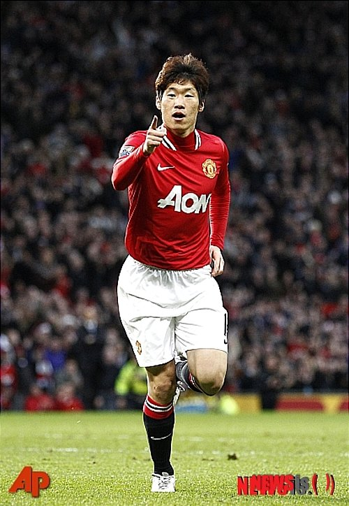

Park Ji-sung (Korean: 박지성; Hanja: 朴智星; Korean pronunciation: [pak̚.t͈ɕi.sʌŋ]; born 25 February 1981)[note 1] is a South Korean former professional footballer who played as a midfielder.

Born in the South Korean capital Seoul,[10] Park is one of the most successful players in Asian history, having won 19 trophies in his career.[11][12] He is the first Asian footballer to have won the UEFA Champions League, to play in a UEFA Champions League final, as well as the first Asian to have won the FIFA Club World Cup.[13] Park was able to play anywhere across the midfield and was noted for his exceptional fitness level, discipline, work ethic and off-the-ball movement.[14] His remarkable endurance levels earned him the nickname "Three-Lungs" Park.[15]